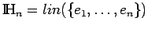
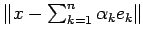
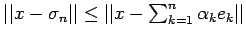
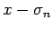
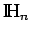

Inhalt Index DeskTop Bronstein

 Funktionalanalysis Hilbert-Räume Fourier-Reihen im Hilbert-Raum
Funktionalanalysis Hilbert-Räume Fourier-Reihen im Hilbert-Raum


Seien jetzt  ein separabler HILBERT-Raum und
ein separabler HILBERT-Raum und
ein fixiertes orthonormales System in  . Für ein Element
. Für ein Element  heißen die Zahlen cn=(x,en) FOURIER-Koeffizienten des Elements x bezüglich des Systems (12.124). Die (formale) Reihe
heißen die Zahlen cn=(x,en) FOURIER-Koeffizienten des Elements x bezüglich des Systems (12.124). Die (formale) Reihe
nennt man FOURIER-Reihe des Elements x bezüglich des Systems (12.124). Die n-te Partialsumme der FOURIER-Reihe eines Elements x besitzt die Eigenschaft der Bestapproximation, d.h., bei festem n ergibt unter allen Vektoren aus  die n-te Partialsumme der FOURIER-Reihe, also das Element
den kleinsten Wert für  , d.h. . Darüber hinaus ist  orthogonal zu , und es gilt die BESSELsche Ungleichung